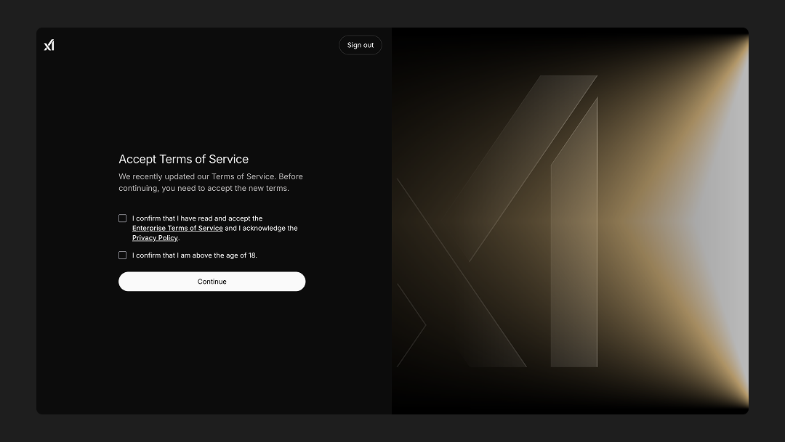
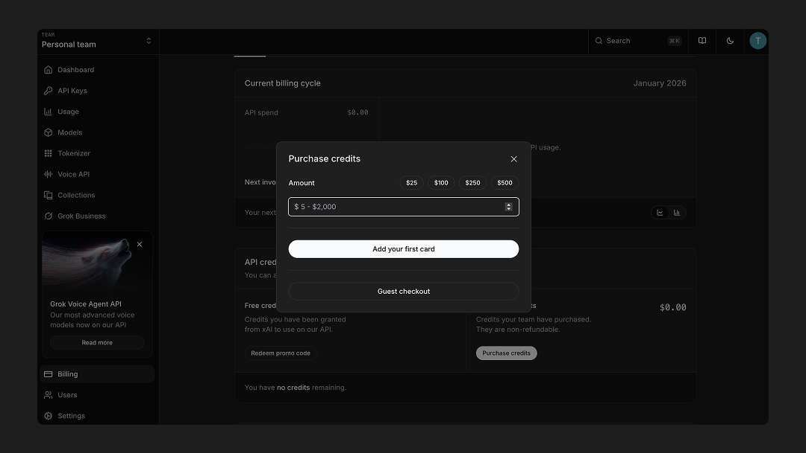
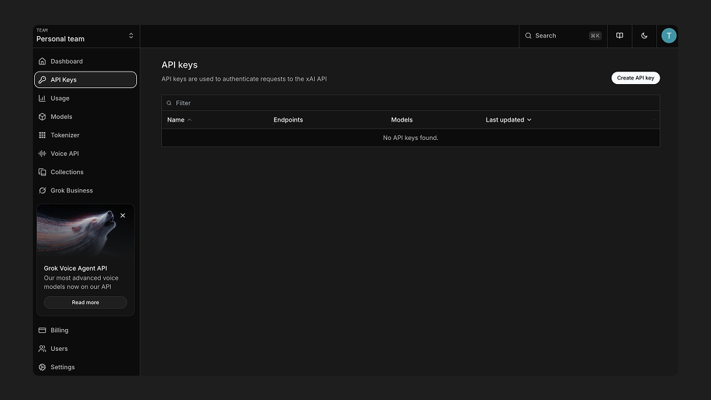
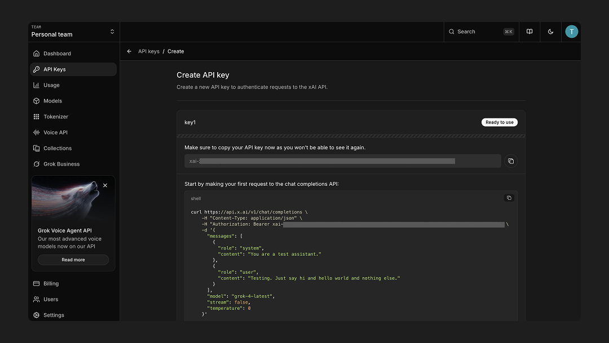

xAI API Key
Learn how to obtain your xAI API key to use Grok models with Openwork™.
Step 1: Login to xAI Console
Navigate to console.x.ai and log in to your account. You'll need to accept the terms of service to proceed.
Step 2: Purchase Credits
After logging in, click on "Buy some credits" to purchase credits for API usage.

You'll need to add a credit card to purchase credits. The credit system works by pre-purchasing credits that are then used as you make API calls. Credits are deducted based on your usage, and you can set up auto-reload to automatically purchase more credits when your balance runs low.
Step 3: Navigate to API Keys
Once you have credits, navigate to the API Keys section in your console.
Step 4: Create a New API Key
Click on "Create a new API key" and fill in the required information:
- Name: Give your API key a descriptive name to help you identify it later
- TPM (Tokens Per Minute): Set a limit for tokens per minute if needed to control rate limits
- RPM (Requests Per Minute): Set a limit for requests per minute if needed to control request rate
Step 5: Copy Your API Key
Once your API key is created, it will be displayed on the screen. Copy it immediately and store it securely, as you won't be able to view it again after leaving this page.
Important: Store this API key in a secure location and never share it publicly. You can add it to Openwork's settings to start using Grok models.